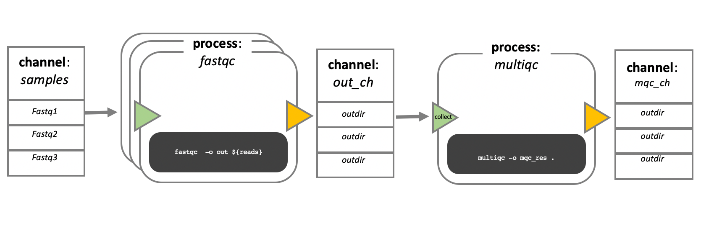
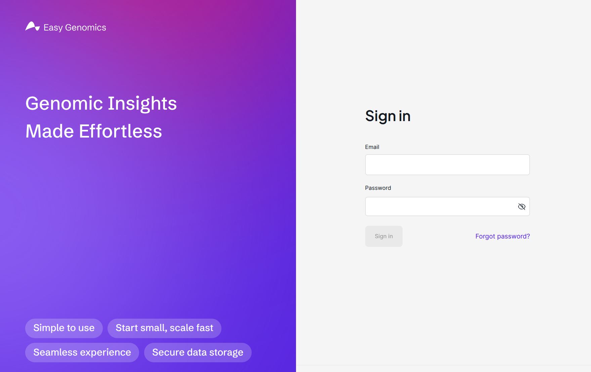
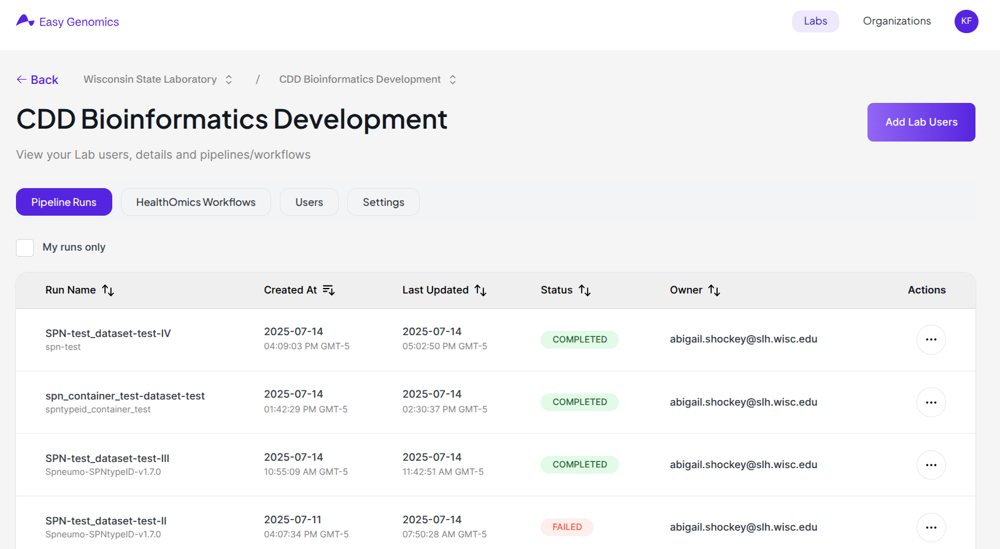
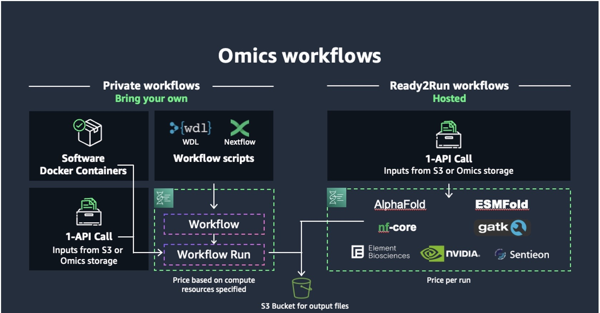
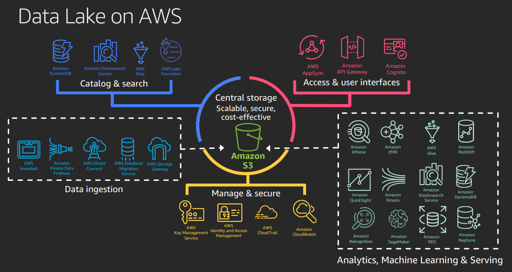
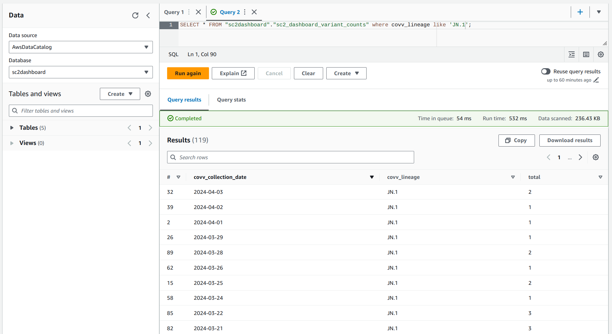
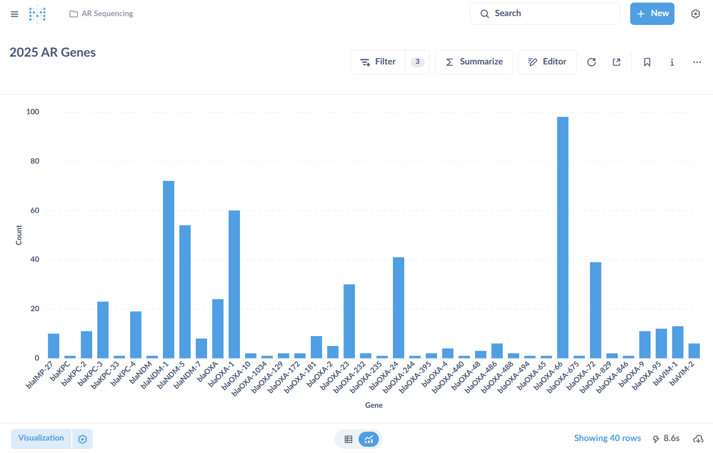
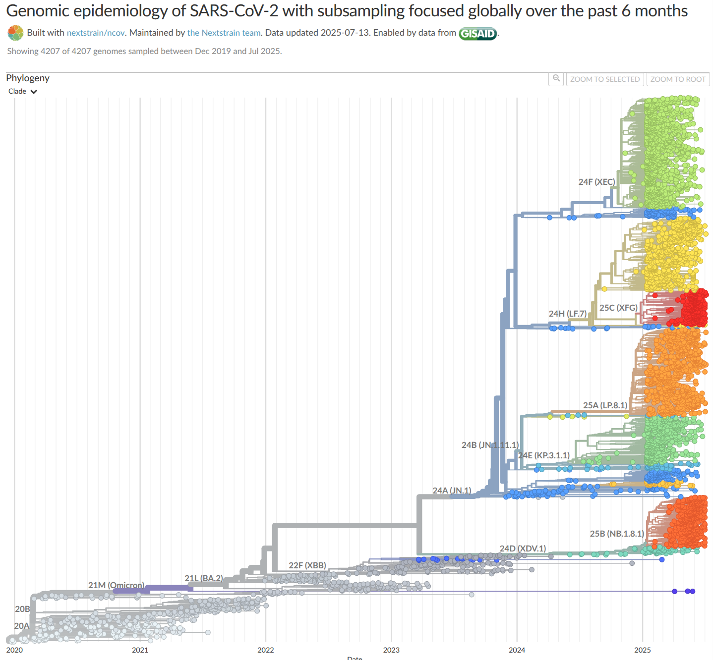

WSLH CDD Infectious Disease Genomics
Kelsey Florek, PhD, MPH
Senior Genomics and Data Scientist
Wisconsin State Laboratory of Hygiene
July 16, 2025
Objectives
- Describe the function of a bioinformatic workflow
- Explain the Communicable Disease Division's process for genomic data analysis
- Summarize the Communicable Disease Division's data reporting planning and strategies
Anatomy of a workflow
Sequencing Reads
@M05192:295:000000000-K6N36:1:1101:9502:1212 1:N:0:NAGCGCTC+NCGTAAGA
GCGTTACATGAGGCTTATACTGAAACATTGCCTAATCCCGCCCGGTGGAAAGCTAAAAANTCCTNTGAACTGCNGGGCTATTCAGAAGNNNN
+
CCCCCGGGGGGGGGGGGGGGGGGGGGGGGGGGGFF@@FGGGGGGGGGGGGGGDGGGGFG#:C@F#:@FGGGGG#:C@FFFGGGAFGF?####
@M05192:295:000000000-K6N36:1:1101:13064:1213 1:N:0:NAGCGCTC+NCGTAAGA
TAGTGGCACTGTTTGACCATCAGCAACGCATTGGTGAACTGATGCCGGAGCGGCGTTTTNACNANGCACGTCGNCAGCAAATGATGGANNNNNNNNNNNN
+
CCCCCGGGGGGGGGGGGGGGGGGGGGGGGGGGGGGGGGGGGGGGGGGGGGGGGGGGGGG#:D#:#6CFGGGGG#:DFGGGFGG??FGG############
@M05192:295:000000000-K6N36:1:1101:18301:1216 1:N:0:NAGCGCTC+NCGTAAGA
GCCCGGTGGTGTAATTTGCGCCCTCCGAACAAAGCCACGCCACCAGGCTGGCAATCTCANACNTNGCGCCAAANCGCCGCAGAGGAATNNNNNNNN
+
CCCCCGGGGGFGGGGGGGGGGCFCGGGGGGGGGFGGGGGDGGEGGFGGGGGGGGGGGGF#:C#:#::@D@7FE#6CC#FGGGGCFGFE########
@M05192:295:000000000-K6N36:1:1102:8809:23354 1:N:0:TAGCGCTC+GCGTAAGA
GTGTTATTTGCGTGTCGCGGGCATTATGGCGGAGTACTCTCAGCCTGACGATATGATGGTGGTTTCCGCCGCCGGTAGCACCACTAACCAGTTGAT
+
CCC#CFGGFGGDECG9@FFGGGGFGG#,,C7::@F@FFGFFGGGGGGFGEEF@C,9EA9C@BBFGEF>FGECFGGF+F#C##BDFGFFFFE,??9,
@M05192:295:000000000-K6N36:1:1102:12222:23342 1:N:0:TAGCGCTC+GCGTAAGA
AAGCTAACCGATGCGGATAATGCCGCCGATGGCATTTTTTTCCCCGCCCTTGAGCAAAATATGATGGGTGCGGTGTTAATTAACGAAAATGATGAAGT
+
CCCCCGGGGGGGGGGGGGGGGGGGGGGGGGGGGGGGGGGGGGGGGGGGGGGGGGGGGGGGGGGCFGGGGGGGGGGGGFGCEFGGGGGGGGGGGGGGEF
@M05192:295:000000000-K6N36:1:1102:17996:23344 1:N:0:TAGCGCTC+GCGTAAGA
GAGCAGGATAAAACCTACAAAATTACAGTTCTGCATACCAATGATCATCATGGGCATTTTTGGCGCAATGAATATGGCGAATATGGTCTGGCG
+
CCCCCGGGGGGGGGGGGGGGGGGGGGGGGGGGGGGGGGGGGGGGGGGGGGGGGGGGGGGGGGGGGGGDGGGGGGGGGGGGGGGGGGFGGGGGG
General Steps
- Sequencing read quality trimming and classification
- Sequencing read mapping or assembly
- Assembly quality control and classification
- Variant identification and classification
- Genome identification and classification
- Result formatting
Genomic software
Spriggan
- BBDuk
- FastQC
- Kraken2
- BWA
- NCBIAMRFinderPlus
- Samtools
- QUAST
- MultiQC
- MLST
- Custom Python Scripts
- Custom Bash Scripts
Viralrecon
- FastQC
- Fastp
- Kraken2
- Bowtie2
- iVar
- Picard
- BCFTools
- SnpEff
- SnpSift
- ASCIIGenome
- QUAST
- Pangolin
- Nextclade
WSLH Bioinformatics Workflows - Nextflow
Objectives
- Describe the function of a bioinformatic workflow
- Explain the Communicable Disease Division's process for genomic data analysis
- Summarize the Communicable Disease Division's data reporting planning and strategies
Easy Genomics
Easy Genomics
Running workflows in AWS
Data in AWS
Querying Data in AWS
Objectives
- Describe the function of a bioinformatic workflow
- Explain the Communicable Disease Division's process for genomic data analysis
- Summarize the Communicable Disease Division's data reporting planning and strategies
Building a reporting framework
- Build genomic analysis capacity
- Develop post-analysis organization/cataloging
- Deploy resources for reporting
Metabase
Lightweight framework for data dashboards and public visualizations
Nextstrain
Working with genomic relatedness
